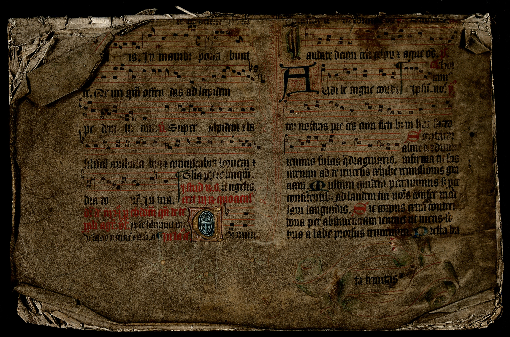
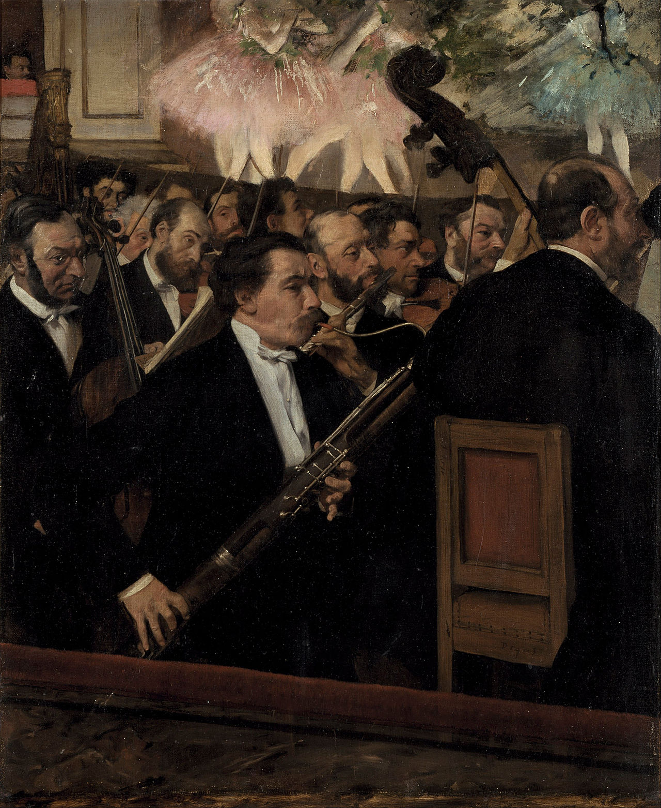
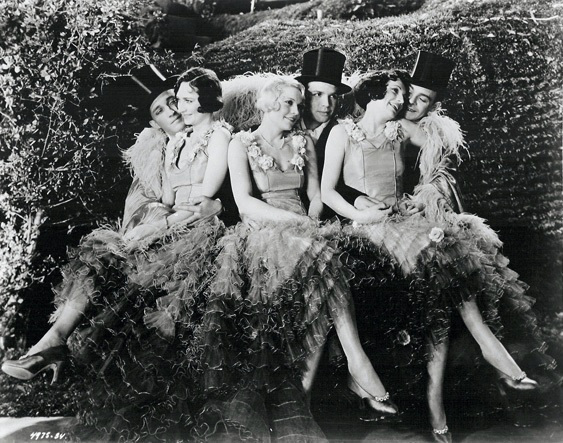

古典之路
一条按时间展开的古典音乐聆听路径：从圣咏、复调、歌剧和交响曲，到唱片、电影、游戏和当代跨类型创作。
这是一份给初学者的古典音乐聆听指南。它不按名气排序，而是按时间、场景和媒介变化来组织：从教堂与宫廷，到歌剧院、音乐厅、唱片、电影、游戏和流媒体。
正文分成十个章节，每章先解释这一时期该听什么，再给出可以直接点开的基础曲目。配套歌单放在下一节，适合边读边听。
配套歌单
这份指南配有一张 180 首的歌单表。表格文件是 classical_music_intro_playlist.zh-CN.tsv，TSV 是一种用制表符分隔的表格文件，可以用 Excel、Numbers 或 Google Sheets 打开。每一行对应歌单里的一首曲目。
歌单覆盖约 9 世纪到 2020 年代，涉及 128 位作曲家、作曲者或屏幕音乐作者，其中 108 首来自 1900 年以后。表格里还有 100 多个细分体裁和形式标签，可以按交响曲、协奏曲、歌剧、宗教声乐、电影配乐、游戏配乐等线索重新筛选。
track_no 是建议播放顺序，chapter 对应下面十个章节，difficulty 标出基础或进阶。每章正文先列 5 首基础曲目；想补齐完整路径，再打开表格按 track_no 从 001 听到 180。
如果你使用 Apple Music 或 Apple Music Classical，可以从表格里的 apple_search_keywords 开始找版本；如果你使用 Spotify、YouTube Music、TIDAL、网易云音乐或其他平台，也可以用同一张表按顺序重建歌单。不同平台的曲库不完全一样，所以替代版本最好记录下来。
如果想让 AI 助手在指定平台重建这份 180 首歌单，可以把 歌单生成 prompt 和 TSV 表格一起交给它。
音乐史地图
这张图只选取少数关键人物，不是完整作曲家索引，也不等同于歌单覆盖范围。它把人物放在三条听觉线索上：礼拜与声乐、舞台与音乐厅、录音与屏幕媒介。头像边框颜色表示地区或传统，横向位置表示大致年代；线条不是师承关系，而是提示不同听法如何延续和转移。
1. 早期音乐与复调（约 9 世纪-1600）：音乐先服务于文字、礼拜和空间

早期欧洲音乐最重要的场景不是音乐厅，而是教堂、修道院和宫廷。圣咏以单旋律承载拉丁文文本，复调出现后，多条旋律开始同时运动，音乐的纵向空间被打开。帕莱斯特里纳、伯德、塔利斯这些作曲家关注的是声音如何服务文字，蒙特威尔第则把文字、戏剧和器乐推向歌剧的门口。
听这一章时，先不要急着找主题旋律。可以听人声如何在空间里展开，听句子怎样被拉长，听不同声部如何互相模仿。早期音乐的魅力不在强烈戏剧冲突，而在音响的纯度、线条的秩序和文字的光泽。
影响链条可以这样理解：圣咏给了西方音乐旋律与礼拜结构，复调训练了后来的对位写作，蒙特威尔第把文艺复兴晚期的声乐语言推向巴洛克戏剧。后来的巴赫、勃拉姆斯、斯特拉文斯基和阿沃·帕特都以不同方式回望过这一传统。
基础曲目（先听这 5 首）
| 歌单编号 | 难度 | 作曲家 | 作品 | 推荐版本 / 演奏者 | Apple Music 检索 | 这首承担的作用 |
|---|---|---|---|---|---|---|
| 001 | 基础 | 佚名圣咏传统 | Gregorian Chant: Dies irae | Chant: Music for the Soul / Benedictine Monks of Santo Domingo de Silos | 搜索 | 圣咏入门，听单旋律如何服务文本 |
| 002 | 基础 | 宾根的希尔德加德（Hildegard von Bingen） | O viridissima virga, BN 19 | A Feather on the Breath of God / Emma Kirkby, Gothic Voices, Christopher Page | 搜索 | 女性作曲家与中世纪神秘主义声音 |
| 006 | 基础 | 若斯坎·德普雷（Josquin des Prez） | Ave Maria ... virgo serena | Josquin: Motets / The Tallis Scholars, Peter Phillips | 搜索 | 模仿复调的清晰入门路径 |
| 007 | 基础 | 乔瓦尼·皮耶路易吉·达·帕莱斯特里纳（Giovanni Pierluigi da Palestrina） | Missa Papae Marcelli: Kyrie | Palestrina: Missa Papae Marcelli / The Tallis Scholars, Peter Phillips | 搜索 | 反宗教改革时期的文本清晰度 |
| 009 | 基础 | 威廉·伯德（William Byrd） | Haec dies | Byrd: Masses and Motets / The Cardinall's Musick, Andrew Carwood | 搜索 | 英国文艺复兴声乐的明亮节奏 |
2. 巴洛克（约 1600-1750）：秩序、装饰和持续推进的低音

巴洛克音乐建立了很多后来仍然有效的语法：低音通奏让音乐有稳定地基，协奏曲让独奏者和乐队对话，赋格把一个短主题发展成复杂结构，舞曲组曲把宫廷节奏带进器乐。巴赫是这套语言的高峰，但维瓦尔第、亨德尔、拉莫、科雷利、珀塞尔也各自代表了不同地区的声音。
听巴洛克音乐，可以抓住三个东西：低音线是否持续推动，装饰音是否像说话时的语气，主题是否在不同声部间传递。巴赫的音乐常被说成理性，但真正打动人的是理性和情感并不分开。
巴洛克对后世影响很深。门德尔松在 19 世纪推动巴赫复兴，20 世纪的新古典主义又回到巴洛克和古典时期的清晰形式。录音技术也改变了巴洛克音乐的命运，LP 和小型唱片公司让早期音乐、室内乐、古乐器演奏逐渐进入家庭聆听。
基础曲目（先听这 5 首）
| 歌单编号 | 难度 | 作曲家 | 作品 | 推荐版本 / 演奏者 | Apple Music 检索 | 这首承担的作用 |
|---|---|---|---|---|---|---|
| 015 | 基础 | 阿尔坎杰洛·科雷利（Arcangelo Corelli） | Concerto Grosso in G Minor, Op. 6 No. 8 "Christmas Concerto" | Corelli: Concerti Grossi Op. 6 / Trevor Pinnock, The English Concert | 搜索 | 大协奏曲和巴洛克合奏平衡 |
| 016 | 基础 | 安东尼奥·维瓦尔第（Antonio Vivaldi） | The Four Seasons: Spring, I. Allegro | Vivaldi: The Four Seasons / Fabio Biondi, Europa Galante | 搜索 | 标题协奏曲，听节奏和图像感 |
| 017 | 基础 | 安东尼奥·维瓦尔第（Antonio Vivaldi） | Gloria, RV 589: Gloria in excelsis Deo | Vivaldi: Gloria / Robert King, The King's Consort | 搜索 | 巴洛克宗教合唱的直接光亮 |
| 018 | 基础 | 乔治·弗里德里克·亨德尔（George Frideric Handel） | Zadok the Priest | Handel: Coronation Anthems / Trevor Pinnock, The English Concert | 搜索 | 仪式音乐和公共权力的声音 |
| 019 | 基础 | 乔治·弗里德里克·亨德尔（George Frideric Handel） | Messiah: Hallelujah | Handel: Messiah / John Eliot Gardiner, Monteverdi Choir | 搜索 | 英语清唱剧和大众经典 |
3. 古典主义（约 1750-1820）：音乐成为公共语言

18 世纪后半叶，音乐从宫廷和教会走向更广泛的公共生活。海顿、莫扎特和贝多芬把交响曲、弦乐四重奏、奏鸣曲和协奏曲变成可以被反复讨论的形式。这里的“古典主义”不是整个古典音乐，而是一个强调平衡、句法、主题发展和结构清晰的时期。
这一章可以重点听形式。奏鸣曲式常把两个性格不同的主题放在一起，再通过发展部制造冲突和回归。协奏曲常让独奏者既与乐队合作，又保持个人声音。弦乐四重奏则像四个人在高密度对话。
贝多芬是连接古典主义和浪漫主义的关键人物。他从海顿、莫扎特那里继承形式，却把形式推向更强的戏剧张力。后来的勃拉姆斯、布鲁克纳、马勒和肖斯塔科维奇都绕不开这个问题：在贝多芬之后，交响曲还能怎样继续写。
基础曲目（先听这 5 首）
| 歌单编号 | 难度 | 作曲家 | 作品 | 推荐版本 / 演奏者 | Apple Music 检索 | 这首承担的作用 |
|---|---|---|---|---|---|---|
| 033 | 基础 | 卡尔·菲利普·埃马努埃尔·巴赫（Carl Philipp Emanuel Bach） | Solfeggietto in C Minor, Wq. 117/2 | C.P.E. Bach: Keyboard Works / Miklós Spányi | 搜索 | 从巴洛克到古典的情绪化键盘语言 |
| 034 | 基础 | 约瑟夫·海顿（Joseph Haydn） | Trumpet Concerto in E-flat Major: III. Allegro | Haydn: Trumpet Concerto / Håkan Hardenberger, Academy of St Martin in the Fields | 搜索 | 新乐器和古典协奏曲的明亮表达 |
| 035 | 基础 | 约瑟夫·海顿（Joseph Haydn） | String Quartet Op. 76 No. 3 "Emperor": II. Poco adagio | Haydn: String Quartets Op. 76 / Quatuor Mosaïques | 搜索 | 弦乐四重奏作为室内对话 |
| 036 | 基础 | 约瑟夫·海顿（Joseph Haydn） | Symphony No. 94 "Surprise": II. Andante | Haydn: London Symphonies / Leonard Bernstein, New York Philharmonic | 搜索 | 公共音乐会中的幽默和听众期待 |
| 037 | 基础 | 路易吉·博凯里尼（Luigi Boccherini） | String Quintet in E Major, G. 275: Minuet | Boccherini: String Quintets / Europa Galante | 搜索 | 古典室内乐的优雅舞曲 |
4. 浪漫主义与民族风格（约 1810-1910）：个人情感、巨型乐队和歌剧工业

19 世纪的音乐更强调个人情感、文学想象和民族身份。舒伯特把诗歌和钢琴伴奏结合成高度浓缩的戏剧，肖邦让钢琴像歌唱，李斯特把炫技变成舞台人格，瓦格纳把歌剧扩展为持续流动的音乐戏剧，勃拉姆斯则在贝多芬之后继续维护结构的重量。
听浪漫主义音乐，最容易抓住的是旋律和和声的扩张。调性不再只是稳定的家，而是可以被推远、拖延、悬置的空间。管弦乐队越来越大，铜管、打击乐和弦乐群制造出更强的体积感。歌剧在这一时期也是大众娱乐、商业系统和民族文化的结合体。
这里有两条影响线很重要。一条是瓦格纳的主导动机进入电影配乐，人物、地点和命运可以由主题标识。另一条是民族乐派把民歌、舞曲、语言节奏和地方传说带进交响曲与歌剧，后来影响了巴托克、亚纳切克、科普兰和很多电影作曲家。
基础曲目（先听这 5 首）
| 歌单编号 | 难度 | 作曲家 | 作品 | 推荐版本 / 演奏者 | Apple Music 检索 | 这首承担的作用 |
|---|---|---|---|---|---|---|
| 051 | 基础 | 弗朗茨·舒伯特（Franz Schubert） | Symphony No. 8 "Unfinished": I. Allegro moderato | Schubert: Symphony No. 8 / Carlos Kleiber, Vienna Philharmonic | 搜索 | 浪漫主义阴影和歌唱性旋律 |
| 052 | 基础 | 弗朗茨·舒伯特（Franz Schubert） | Erlkönig, D. 328 | Schubert: Lieder / Dietrich Fischer-Dieskau, Gerald Moore | 搜索 | 艺术歌曲里的戏剧角色 |
| 053 | 基础 | 费利克斯·门德尔松（Felix Mendelssohn） | A Midsummer Night's Dream: Overture | Mendelssohn: A Midsummer Night's Dream / Claudio Abbado, London Symphony Orchestra | 搜索 | 文学、轻盈管弦乐和标题音乐 |
| 055 | 基础 | 罗伯特·舒曼（Robert Schumann） | Kinderszenen, Op. 15: Träumerei | Schumann: Kinderszenen / Vladimir Horowitz | 搜索 | 钢琴小品里的内心叙事 |
| 057 | 基础 | 弗雷德里克·肖邦（Frédéric Chopin） | Nocturne in E-flat Major, Op. 9 No. 2 | Chopin: Nocturnes / Arthur Rubinstein | 搜索 | 钢琴歌唱性和装饰音 |
5. 现代主义开端（约 1890-1918）：旧语法开始松动

1900 年前后，很多作曲家不再满足于浪漫主义的扩张。德彪西和拉威尔改变了和声与管弦乐色彩，萨蒂用简洁和冷感挑战宏大叙事，斯特拉文斯基把节奏变成结构核心，勋伯格和第二维也纳乐派则让调性中心彻底动摇。1913 年《春之祭》的巴黎首演常被当作象征性转折点，因为它把节奏、音色和身体性推到前台。
这一章要听“陌生感”。德彪西的和声常不像传统和声那样急着解决，拉威尔的配器清晰到近乎精密，斯特拉文斯基的重音让节拍失去稳定地面，勋伯格之后的音乐不再总是回到一个主调。现代主义不是一种风格，而是一组不同的反应。
影响链条很密。德彪西影响了拉威尔、武满彻和很多电影音乐的色彩写作；斯特拉文斯基影响了 20 世纪对节奏和拼贴的理解；勋伯格、贝尔格、韦伯恩影响了战后先锋。好莱坞也继承了理查·施特劳斯、瓦格纳、马勒式的大乐队想象。
基础曲目（先听这 5 首）
| 歌单编号 | 难度 | 作曲家 | 作品 | 推荐版本 / 演奏者 | Apple Music 检索 | 这首承担的作用 |
|---|---|---|---|---|---|---|
| 073 | 基础 | 克洛德·德彪西（Claude Debussy） | Prélude à l'après-midi d'un faune | Debussy: Orchestral Works / Pierre Boulez, Cleveland Orchestra | 搜索 | 印象主义色彩和现代管弦开端 |
| 076 | 基础 | 莫里斯·拉威尔（Maurice Ravel） | Pavane pour une infante défunte | Ravel: Piano Works / Alexandre Tharaud | 搜索 | 古典姿态和现代和声 |
| 078 | 基础 | 莫里斯·拉威尔（Maurice Ravel） | Boléro | Ravel: Boléro / Claudio Abbado, London Symphony Orchestra | 搜索 | 重复、配器和渐强的实验 |
| 081 | 基础 | 理查德·施特劳斯（Richard Strauss） | Salome: Dance of the Seven Veils | Strauss: Salome / Georg Solti, Vienna Philharmonic | 搜索 | 歌剧、欲望和现代和声刺激 |
| 083 | 基础 | 查尔斯·艾夫斯（Charles Ives） | The Unanswered Question | Ives: Orchestral Works / Leonard Bernstein, New York Philharmonic | 搜索 | 美国实验主义和空间分层 |
6. 两次大战之间（约 1918-1945）：新古典、爵士、苏联语境和电影工业

第一次世界大战后，很多作曲家对浪漫主义的膨胀产生警惕。斯特拉文斯基、普罗科菲耶夫、欣德米特、普朗克等人回到古典形式，却用现代和声与节奏重新处理。美国作曲家把爵士、赞美诗、民间舞曲和电影工业带进管弦乐。苏联作曲家则在政治压力下写作，肖斯塔科维奇第五交响曲就是这一语境中最复杂的作品之一。
听这一章，节奏会比旋律更醒目。格什温把爵士语汇放进协奏曲式的框架，科普兰用开阔音程塑造美国式空间，普罗科菲耶夫让古典形式带上讽刺感，肖斯塔科维奇的进行曲常在胜利和恐惧之间摇摆。
录音技术在这里很关键。78 转唱片时代不适合完整长作品，LP 出现后，交响曲、四重奏和歌剧可以更完整地进入家庭。电影工业也让管弦乐获得新的大众接触途径，科恩戈尔德从欧洲歌剧和交响传统转入好莱坞，直接影响了后来的电影配乐语言。
基础曲目（先听这 5 首）
| 歌单编号 | 难度 | 作曲家 | 作品 | 推荐版本 / 演奏者 | Apple Music 检索 | 这首承担的作用 |
|---|---|---|---|---|---|---|
| 097 | 基础 | 谢尔盖·普罗科菲耶夫（Sergei Prokofiev） | Symphony No. 1 "Classical": I. Allegro | Prokofiev: Classical Symphony / Claudio Abbado, London Symphony Orchestra | 搜索 | 新古典主义，古典外壳里的现代讽刺 |
| 098 | 基础 | 谢尔盖·普罗科菲耶夫（Sergei Prokofiev） | Romeo and Juliet: Dance of the Knights | Prokofiev: Romeo and Juliet / Valery Gergiev, London Symphony Orchestra | 搜索 | 芭蕾、重音和戏剧人物 |
| 100 | 基础 | 德米特里·肖斯塔科维奇（Dmitri Shostakovich） | Symphony No. 5: IV. Allegro non troppo | Shostakovich: Symphony No. 5 / Yevgeny Mravinsky, Leningrad Philharmonic | 搜索 | 苏联语境、胜利和讽刺的歧义 |
| 101 | 基础 | 德米特里·肖斯塔科维奇（Dmitri Shostakovich） | Jazz Suite No. 2: Waltz II | Shostakovich: Jazz Suites / Riccardo Chailly, Royal Concertgebouw Orchestra | 搜索 | 轻音乐、讽刺和大众传播 |
| 105 | 基础 | 乔治·格什温（George Gershwin） | Rhapsody in Blue | Gershwin: Rhapsody in Blue / Leonard Bernstein, Columbia Symphony Orchestra | 搜索 | 爵士和协奏曲传统的交汇 |
7. 战后先锋与声音实验（约 1945-1970s）：音乐开始追问声音本身

1945 年后，欧洲和美国的作曲家面对战争后的断裂感，开始重新定义音乐材料。布列兹和斯托克豪森发展序列主义和电子音乐，凯奇让偶然和沉默进入作品，泽纳基斯把数学和建筑思维带进声音组织，利盖蒂和潘德列茨基关注音块、密度和质感。这里的难点不是“难听”，而是听法已经变了。
听这一章时，可以暂时放下旋律。关注声音如何出现、聚集、变形、消失。利盖蒂的《大气》像没有边界的云团，潘德列茨基的《广岛受难者的哀歌》把弦乐变成尖锐的声响事件，武满彻让日本传统乐器和西方管弦乐保持距离又互相照亮。
这条线影响了很多电影和当代配乐。库布里克在《2001：太空漫游》中使用利盖蒂，让先锋音乐进入大众记忆。恐怖片和科幻片也大量吸收音块、微分音、噪声和电子声响。音乐会、录音棚和电影声轨之间的边界开始松动。
基础曲目（先听这 5 首）
| 歌单编号 | 难度 | 作曲家 | 作品 | 推荐版本 / 演奏者 | Apple Music 检索 | 这首承担的作用 |
|---|---|---|---|---|---|---|
| 117 | 基础 | 奥利维耶·梅西安（Olivier Messiaen） | Turangalîla-Symphonie: V. Joie du sang des étoiles | Messiaen: Turangalîla-Symphonie / Esa-Pekka Salonen, Philharmonia Orchestra | 搜索 | 节奏、色彩和昂德马特诺 |
| 121 | 基础 | 约翰·凯奇（John Cage） | Sonatas and Interludes: Sonata V | Cage: Sonatas and Interludes / John Tilbury | 搜索 | 预置钢琴和声音对象 |
| 124 | 基础 | 捷尔吉·利盖蒂（György Ligeti） | Atmosphères | Ligeti: Orchestral Works / Jonathan Nott, Berlin Philharmonic | 搜索 | 音块写作和科幻电影记忆 |
| 126 | 基础 | 克日什托夫·潘德列茨基（Krzysztof Penderecki） | Threnody for the Victims of Hiroshima | Penderecki: Threnody / Antoni Wit, Polish National Radio Symphony | 搜索 | 弦乐噪声、历史创伤和现代音响 |
| 128 | 基础 | 本杰明·布里顿（Benjamin Britten） | War Requiem: Libera me | Britten: War Requiem / Benjamin Britten, London Symphony Orchestra | 搜索 | 战争记忆、拉丁弥撒和英文诗 |
8. 极简主义与后极简（约 1960s-1990s）：重复不是停滞，而是变化被放慢

20 世纪 60 年代以后，极简主义对复杂先锋作出反应。Terry Riley、Steve Reich、Philip Glass、John Adams 用重复、脉冲、相位错位和清晰和声重建可听性。阿沃·帕特和格雷茨基则把简约语言推向宗教和静观体验。后极简主义进一步进入歌剧、电影、舞台和跨界场景。
听极简主义，不要只问“主题什么时候来”。变化常发生在细节里：两个声部的相位慢慢错开，一个和弦循环被配器和重音改变，一个短动机在长时间重复中获得新的重量。它很适合现代听众，因为我们已经习惯电子音乐、环境音乐和电影配乐中的循环结构。
极简主义对后来的电影和游戏音乐影响很大。重复可以制造时间感、行进感和心理压力，也能给画面留空间。Philip Glass、John Adams、Max Richter、Michael Nyman、Jóhann Jóhannsson 这条线，让当代听众更容易从银幕进入音乐厅。
基础曲目（先听这 5 首）
| 歌单编号 | 难度 | 作曲家 | 作品 | 推荐版本 / 演奏者 | Apple Music 检索 | 这首承担的作用 |
|---|---|---|---|---|---|---|
| 137 | 基础 | 特里·赖利（Terry Riley） | In C | In C / Shanghai Film Orchestra, Wang Yongji | 搜索 | 极简主义起点，模块重复和开放结构 |
| 138 | 基础 | 史蒂夫·赖希（Steve Reich） | Clapping Music | Reich: Works 1965-1995 / Steve Reich and Musicians | 搜索 | 相位思维的最小模型 |
| 139 | 基础 | 史蒂夫·赖希（Steve Reich） | Music for 18 Musicians: Pulses | Reich: Music for 18 Musicians / Steve Reich and Musicians | 搜索 | 脉冲、呼吸和渐变过程 |
| 141 | 基础 | 菲利普·格拉斯（Philip Glass） | Glassworks: Opening | Glassworks / Philip Glass Ensemble | 搜索 | 重复和流行化极简主义入门 |
| 143 | 基础 | 约翰·亚当斯（John Adams） | Short Ride in a Fast Machine | Adams: Short Ride in a Fast Machine / Michael Tilson Thomas, San Francisco Symphony | 搜索 | 后极简主义的速度和管弦亮度 |
从第 9 节开始，指南不再只按年份往后排。第 9 节是“接触途径”专题，讨论电影、剧集、游戏和短视频怎样把管弦乐带给新听众；它横跨 20 世纪电影工业、1970 年代以后好莱坞交响传统、1980 年代以来的游戏音乐和今天的流媒体传播。第 10 节才回到 1990 年以来的音乐会作品、当代作曲家和跨类型创作（cross-genre composition）。这里用 1990 年前后做参考，是因为冷战结束、CD 与全球唱片市场、音乐节和学院网络、后来互联网与流媒体共同改变了新作品的传播环境，不是说电影或游戏音乐从 1990 年才开始。
9. 电影、游戏与新的接触途径（电影约 1930s 至今；游戏约 1980s 至今）：很多人先听见管弦乐，再认识古典音乐

很多人不是从音乐厅开始接触古典音乐，而是先通过电影、剧集、游戏和短视频听见管弦乐。这条线比 1990 年早得多：好莱坞黄金时代已经把欧洲晚期浪漫主义、歌剧和交响乐语言带进电影，伯纳德·赫尔曼、尼诺·罗塔、莫里康内、约翰·威廉姆斯都属于这条传统的不同阶段。游戏音乐主要在 1980 年代以后形成自己的语法，早期受技术限制，后来通过管弦改编、现场音乐会和流媒体重新进入古典音乐听众的视野。
这一章可以听主题如何绑定角色和世界观。电影配乐通常要在很短时间内建立情绪，所以旋律轮廓、配器和节奏标识非常清楚。游戏音乐还要适应重复和场景切换，因此主题常被做成可循环、可变奏、可重新配器的材料。
这不是把电影音乐简单归入古典音乐，而是承认当代听众的真实路径。皇家爱乐等机构的观众研究显示，影视和游戏音乐已经成为年轻听众接触管弦乐的重要途径。对初学者来说，从熟悉的影像声音转向德彪西、瓦格纳、斯特拉文斯基、科普兰和极简主义，是很自然的路线。
基础曲目（先听这 5 首）
| 歌单编号 | 难度 | 作曲家 | 作品 | 推荐版本 / 演奏者 | Apple Music 检索 | 这首承担的作用 |
|---|---|---|---|---|---|---|
| 153 | 基础 | 约翰·威廉姆斯（John Williams） | Star Wars: Main Title | Star Wars: A New Hope / John Williams, London Symphony Orchestra | 搜索 | 瓦格纳式主题和好莱坞交响传统 |
| 154 | 基础 | 约翰·威廉姆斯（John Williams） | E.T.: Flying Theme | E.T. The Extra-Terrestrial / John Williams, Hollywood Studio Symphony | 搜索 | 管弦乐的飞翔感和童年记忆 |
| 155 | 基础 | 约翰·威廉姆斯（John Williams） | Schindler's List: Theme | Schindler's List / Itzhak Perlman, John Williams | 搜索 | 独奏小提琴和历史哀悼 |
| 156 | 基础 | 恩尼奥·莫里康内（Ennio Morricone） | The Mission: Gabriel's Oboe | The Mission / Ennio Morricone | 搜索 | 电影旋律如何成为管弦乐入门路径 |
| 158 | 基础 | 尼诺·罗塔（Nino Rota） | The Godfather Waltz | The Godfather / Nino Rota | 搜索 | 圆舞曲、记忆和家族叙事 |
10. 1990 年以来的当代古典与跨类型创作（cross-genre composition，约 1990 至今）：边界变得更松

1990 年以来的当代古典音乐没有单一主流。这里的“1990 年以来”是大致的音乐生态划分，不是严格断代。萨里亚霍用光和音色写歌剧，Adès 让复杂节奏和戏剧能量并存，Jennifer Higdon、Jessie Montgomery、Anna Clyne、Gabriela Ortiz 等作曲家把美国音乐、拉丁美洲节奏、弦乐传统和当代音色混合起来。Caroline Shaw、Roomful of Teeth、Max Richter、Jonny Greenwood 则让古典、流行、电子、电影、实验人声之间的边界更松。
听当代音乐，关键是不要预设它一定艰深。很多当代作品很直接，有明确脉冲、清楚音色和强烈画面感。也有一些作品需要更耐心，先听声音材质和空间，而不是传统旋律。
流媒体改变了当代作品的传播。过去新作品依赖首演、乐评和唱片厂牌；现在作品可以通过电影、游戏、播客、短视频、Apple Music Classical 的导赏歌单和艺术家的个人平台被听见。问题也随之改变：不是缺少入门材料，而是需要知道这些材料后面连接着哪条历史线。
基础曲目（先听这 5 首）
| 歌单编号 | 难度 | 作曲家 | 作品 | 推荐版本 / 演奏者 | Apple Music 检索 | 这首承担的作用 |
|---|---|---|---|---|---|---|
| 169 | 基础 | 詹妮弗·希格登（Jennifer Higdon） | blue cathedral | Higdon: blue cathedral / Robert Spano, Atlanta Symphony Orchestra | 搜索 | 当代美国抒情管弦乐 |
| 170 | 基础 | 米西·马佐利（Missy Mazzoli） | Sinfonia for Orbiting Spheres | Mazzoli: Vespers for a New Dark Age / Victoire | 搜索 | 后极简、电子质感和当代室内乐 |
| 171 | 基础 | 杰西·蒙哥马利（Jessie Montgomery） | Starburst | Strum: Music for Strings / Jessie Montgomery, Catalyst Quartet | 搜索 | 弦乐能量和当代美国声音 |
| 172 | 基础 | 卡罗琳·肖（Caroline Shaw） | Partita for 8 Voices: Passacaglia | Roomful of Teeth / Roomful of Teeth | 搜索 | 人声实验和普利策获奖作品 |
| 173 | 基础 | 安娜·克莱因（Anna Clyne） | Within Her Arms | Clyne: Mythologies / Esa-Pekka Salonen, Philharmonia Orchestra | 搜索 | 弦乐哀歌和当代直接表达 |
附录一：作品编号怎么看
古典音乐标题常有编号，这是为了区分作品，而不是为了吓人。Op. 是 opus，通常指作品号，常和出版顺序有关，但不一定等于创作顺序。贝多芬《第五交响曲》是 Op. 67，表示作品号 67。WoO 是 without opus number，指没有作品号的作品，比如贝多芬《致爱丽丝》常写作 WoO 59。
巴赫常用 BWV，来自 Bach-Werke-Verzeichnis，按体裁和目录整理，不是严格创作顺序。莫扎特常用 K. 或 KV，来自 Köchel 目录。海顿常用 Hob.，舒伯特常用 D，维瓦尔第常用 RV，德彪西常用 L，拉威尔常用 M，巴托克常用 Sz. 或 BB。
一个实用原则：搜索时优先用“作曲家 + 作品类型 + 编号 + 调性”。比如 Mozart Clarinet Concerto K 622 比只搜 Mozart concerto 准确得多。遇到同名作品，编号比昵称可靠；遇到巴赫、莫扎特、舒伯特这类作品很多的作曲家，目录号尤其重要。
附录二：这些因素会怎样改变同一部作品
同一部作品的不同录音，差别通常来自几个层面。它们不是元数据标签，而是会直接改变听感的变量。
- 指挥会改变速度、句法、重音和大结构。贝多芬第五交响曲如果速度紧、重音硬，会显得像持续推进的危机；如果速度宽、弦乐厚，听感会更宏大。
- 乐团会改变音色和透明度。柏林爱乐的厚度、维也纳爱乐的弦乐和木管色彩、克利夫兰管弦乐团的精密度、欧洲室内乐团的轻盈感，会让同一份乐谱呈现不同重心。
- 独奏者会改变作品的叙述视角。协奏曲里，独奏者可能像主角，也可能像室内乐中的第一声部；钢琴或大提琴独奏作品里，触键、揉弦、呼吸和停顿就是解释本身。
- 乐器和演奏法会改变历史距离。巴赫用现代钢琴、羽管键琴、古大提琴或现代大提琴演奏，线条、舞蹈感和和声重量都会不同。
- 录音年代和场地会改变空间感。老录音可能频宽窄、噪声多，但保留了重要传统；现代录音更清晰，细节和低频更容易听见。现场录音常有更强的风险感，录音室版本通常更稳。
- 厂牌和重制会改变音质。历史录音的不同转制会影响高频、动态和速度感；同一录音在不同重制版里可能听起来更亮、更暗或更近。
下面的链接是 Apple Music 搜索链接，便于在不同地区帐号中打开；在 Apple Music Classical 里也可以用同样关键词搜索。这个表不是只比较指挥，有些例子把指挥和乐团一起比较，有些主要比较独奏者、乐器/演奏法或录音年代。
| 作品 | 主要对比变量 | 对比版本 | Apple Music 链接 | 主要差别 |
|---|---|---|---|---|
| 贝多芬《第五交响曲》 | 指挥、乐团、演奏传统 | 赫伯特·冯·卡拉扬（Herbert von Karajan，/ˈhɛrbərt fɒn ˈkærəjæn/）/ 柏林爱乐；卡洛斯·克莱伯（Carlos Kleiber，/ˈkɑːrloʊs ˈklaɪbər/）/ 维也纳爱乐；尼古劳斯·哈农库特（Nikolaus Harnoncourt，/ˈnɪkəlaʊs ˈhɑːrnənkʊərt/）/ 欧洲室内乐团 | Karajan / Kleiber / Harnoncourt | 卡拉扬偏厚重和整体光泽；克莱伯紧张、推进力强；哈农库特更透明，重音和句法更接近历史演奏法思路。 |
| 巴赫《无伴奏大提琴组曲》 | 独奏者、乐器/弓法、录音年代 | 帕布罗·卡萨尔斯（Pablo Casals，/ˈpɑːbloʊ kəˈsɑːlz/）；马友友（Yo-Yo Ma，/ˈjoʊjoʊ mɑː/）；安纳·拜尔斯玛（Anner Bylsma，/ˈɑːnər ˈbaɪlzmə/）或让-吉扬·凯拉斯（Jean-Guihen Queyras，/ˌʒɑːn ɡiˈɛn keɪˈrɑːs/） | Casals / Yo-Yo Ma / Bylsma / Queyras | 卡萨尔斯像在重新发现作品，歌唱性强；马友友的现代录音更平滑、亲近；拜尔斯玛和凯拉斯更强调舞蹈、弓法和历史风格。 |
| 斯特拉文斯基《春之祭》 | 指挥、乐团精密度、录音声场 | 皮埃尔·布列兹（Pierre Boulez，/pjɛər buːˈlɛz/）/ 克利夫兰管弦乐团；埃萨-佩卡·萨洛宁（Esa-Pekka Salonen，/ˈɛsə ˈpɛkə ˈsɑːloʊnən/）/ 洛杉矶爱乐；伦纳德·伯恩斯坦（Leonard Bernstein，/ˈbɜːrnstaɪn/）/ 纽约爱乐 | Boulez / Salonen / Bernstein | 布列兹强调节奏和配器的清晰；萨洛宁兼顾透明度和冲击力；伯恩斯坦更粗粝、更戏剧化。 |
| 肖斯塔科维奇《第五交响曲》 | 指挥、政治语境的解释、乐团传统 | 叶夫根尼·穆拉文斯基（Yevgeny Mravinsky，/jɛvˈɡɛni mrəˈvɪnski/）；伦纳德·伯恩斯坦；伯纳德·海廷克（Bernard Haitink，/ˈbɜːrnɑːrd ˈhaɪtɪŋk/）或瓦西里·佩特连科（Vasily Petrenko，/vəˈsiːli pɛˈtrɛŋkoʊ/） | Mravinsky / Bernstein / Haitink / Petrenko | 关键在结尾：它可以被听成被迫的胜利、公开的庆典，也可以听成压迫下的讽刺。慢乐章的克制程度也很能区分版本。 |
| 德彪西《大海》 | 指挥、乐团音色、法式/现代管弦传统 | 皮埃尔·布列兹 / 克利夫兰；克劳迪奥·阿巴多（Claudio Abbado，/ˈklaʊdioʊ əˈbɑːdoʊ/）/ 卢塞恩；夏尔·明希（Charles Munch，/ʃɑːrl mʊntʃ/）/ 波士顿 | Boulez / Abbado / Munch | 布列兹清晰冷静，阿巴多流动自然，明希更有法国传统的弹性和热度。 |
| 莫扎特《单簧管协奏曲》 | 独奏者、乐器音色、呼吸和连线 | 杰克·布莱默（Jack Brymer，/dʒæk ˈbraɪmər/）；萨宾娜·迈耶（Sabine Meyer，/zaˈbiːnə ˈmaɪər/）；马丁·弗罗斯特（Martin Fröst，/ˈmɑːrtɪn frɜːst/） | Brymer / Meyer / Fr%C3%B6st | 独奏者的音色、连线和呼吸会改变作品气质。布莱默温暖，迈耶更圆润，弗罗斯特更灵活、细节更鲜明。 |
补充：如何自己做版本对比。做版本对比时，可以从同一乐章开始，不要一上来比较整部作品。先听开头一分钟，记下速度、音量、低音清晰度、旋律线是否突出；再听高潮前后，比较指挥如何处理渐强、停顿和声部平衡。最后再看录音年份、现场或录音室、乐团和厂牌。这样听几轮之后，版本差异会比文字描述更清楚。
附录三：基础术语表
术语表优先列西文，IPA 采用通行英语读法。意大利语、法语、德语等术语在原语中可能有不同发音；这里的目的主要是帮你在唱片、乐谱、Apple Music Classical 和英文资料中识别关键词。
Genre and Form
| Term | IPA | 中文 | 说明和入门听法 |
|---|---|---|---|
| Chant | /tʃænt/ | 圣咏 | 单声部宗教歌唱，通常没有伴奏。听文字和旋律如何连在一起，不要期待强烈高潮。 |
| Motet | /moʊˈtɛt/ | 经文歌 | 多声部宗教声乐作品。听不同声部如何模仿和交错。 |
| Mass | /mæs/ | 弥撒 | 基于固定礼拜文本的大型宗教作品。注意 Kyrie、Gloria、Credo 等部分的性格差异。 |
| Requiem | /ˈrɛkwiəm/ | 安魂曲 | 为逝者礼拜文本而写的弥撒类型，常有哀悼、审判、安慰几种情绪。 |
| Oratorio | /ˌɔːrəˈtɔːrioʊ/ | 清唱剧 | 有戏剧性和角色，但通常不在舞台上表演，介于宗教音乐、戏剧和音乐会之间。 |
| Cantata | /kænˈtɑːtə/ | 康塔塔 | 较短的声乐-器乐作品，常分多个段落。听合唱、宣叙调、咏叹调如何交替。 |
| Opera | /ˈɑːpərə/ | 歌剧 | 由声乐、管弦乐、戏剧和舞台构成的综合体裁。看人物、情节和音乐主题如何互相绑定。 |
| Recitative | /ˌrɛsɪtəˈtiːv/ | 宣叙调 | 接近说话的歌唱，用来推进剧情。听语言节奏，不必只等旋律。 |
| Aria | /ˈɑːriə/ | 咏叹调 | 歌剧或清唱剧中较完整的独唱段落，通常是人物情绪停下来被放大的一刻。 |
| Serenade | /ˌsɛrəˈneɪd/ | 小夜曲 | 原本偏社交和户外场景的轻型器乐体裁。听轻盈、清楚、易亲近的句法。 |
| Sonata | /səˈnɑːtə/ | 奏鸣曲 | 通常为一件或两件乐器写的多乐章作品。听主题如何出现、发展、回归。 |
| Sonata form | /səˈnɑːtə fɔːrm/ | 奏鸣曲式 | 古典主义以来常见的结构逻辑，不等于奏鸣曲体裁。常有呈示、发展、再现，适合听冲突和回归。 |
| Concerto | /kənˈtʃɛərtoʊ/ | 协奏曲 | 独奏者和乐队对话或竞争的作品。听独奏者像主角、对手还是合作者。 |
| Concerto grosso | /kənˈtʃɛərtoʊ ˈɡroʊsoʊ/ | 大协奏曲 | 巴洛克常见，小独奏组和大合奏组对话。听小组与整体之间的明暗变化。 |
| Symphony | /ˈsɪmfəni/ | 交响曲 | 为管弦乐队写的大型多乐章作品。听整部作品的结构和乐队色彩。 |
| Chamber music | /ˈtʃeɪmbər ˈmjuːzɪk/ | 室内乐 | 为较小编制写的音乐，像近距离对话，细节比规模重要。 |
| String quartet | /strɪŋ kwɔːrˈtɛt/ | 弦乐四重奏 | 两把小提琴、中提琴、大提琴的室内乐核心体裁。听四个声部如何平等说话。 |
| Suite | /swiːt/ | 组曲 | 一组舞曲或场景音乐的集合，不一定有强叙事，适合按段落听性格。 |
| Prelude | /ˈprɛljuːd/ | 前奏曲 | 常作为开头，也可独立成篇。听它如何建立气氛或音型。 |
| Fugue | /fjuːɡ/ | 赋格 | 一个主题在多个声部中依次进入和发展。先抓主题，再听它如何被追逐和变形。 |
| Toccata | /təˈkɑːtə/ | 托卡塔 | 常见于键盘，强调触键、速度和即兴感。听动作感和手指运动。 |
| Variation | /ˌvɛriˈeɪʃən/ | 变奏曲 | 一个主题被反复改写。听同一个材料如何换装。 |
| Etude | /ˈeɪtjuːd/ | 练习曲 | 原本服务技术训练，后来常成为音乐会作品。听技术问题怎样变成音乐表情。 |
| Nocturne | /ˈnɑːktɜːrn/ | 夜曲 | 常见于钢琴，偏夜晚、歌唱性和内省。听右手旋律和左手伴奏的距离。 |
| Waltz | /wɔːlts/ | 圆舞曲 | 三拍子舞曲。听强-弱-弱的摆动感。 |
| Ballet | /bæˈleɪ/ | 芭蕾 | 为舞蹈和舞台动作写的音乐。听节奏、场景和身体动作感。 |
| Tone poem | /toʊn ˈpoʊəm/ | 交响诗 | 单乐章管弦乐，常有文学或图像标题。听音乐如何描绘人物、风景或故事。 |
| Film score | /fɪlm skɔːr/ | 电影配乐 | 为电影画面和叙事服务的音乐。听主题如何绑定角色、地点和情绪。 |
| Game score | /ɡeɪm skɔːr/ | 游戏配乐 | 为互动场景、循环和玩家行动服务的音乐。听主题如何适应重复、切换和变奏。 |
Descriptive Terms
| Term | IPA | 中文 | 说明和入门听法 |
|---|---|---|---|
| Melody | /ˈmɛlədi/ | 旋律 | 最容易哼出来的线条。听它是歌唱性的、跳跃的，还是碎片化的。 |
| Theme | /θiːm/ | 主题 | 被作品反复使用和发展的核心材料。听它后来有没有变形、换调、换乐器。 |
| Motive | /ˈmoʊtɪv/ | 动机 | 比主题更短的音乐细胞。一个短节奏或几个音也可能撑起整段音乐。 |
| Harmony | /ˈhɑːrməni/ | 和声 | 多个音同时或连续形成的关系。它会让音乐稳定、紧张或漂浮。 |
| Tonality | /toʊˈnæləti/ | 调性 | 音乐围绕某个中心音组织。听你能不能感觉到音乐想回到哪里。 |
| Atonality | /ˌeɪtoʊˈnæləti/ | 无调性 | 不再围绕单一主音组织。听色彩、密度和方向，不要硬找主调。 |
| Rhythm | /ˈrɪðəm/ | 节奏 | 音的长短和重音组织。听它是平稳、舞蹈性、机械性，还是不规则。 |
| Meter | /ˈmiːtər/ | 节拍 | 强弱拍的周期。听它是二拍、三拍，还是故意让你失去重心。 |
| Syncopation | /ˌsɪŋkəˈpeɪʃən/ | 切分 | 重音落在意外位置。听它如何制造摇摆、紧张或爵士感。 |
| Ostinato | /ˌɑːstɪˈnɑːtoʊ/ | 固定音型 | 反复出现的短音型。听它是在推动、催眠，还是制造压力。 |
| Tempo | /ˈtɛmpoʊ/ | 速度 | 音乐快慢。快慢会直接改变作品性格。 |
| Dynamics | /daɪˈnæmɪks/ | 力度 | 音量强弱。听渐强、突强、突然变弱是否带来戏剧效果。 |
| Timbre | /ˈtæmbər/ | 音色 | 声音颜色。听弦乐、木管、铜管、打击乐或电子声哪个更突出。 |
| Orchestration | /ˌɔːrkɪˈstreɪʃən/ | 配器 | 作曲家如何分配乐器。同一旋律换乐器后，情绪可能完全不同。 |
| Texture | /ˈtɛkstʃər/ | 织体 | 声部之间的组织密度。听它是单线条、旋律加伴奏，还是多声部纠缠。 |
| Counterpoint | /ˈkaʊntərpɔɪnt/ | 对位 | 多条独立旋律同时进行。听每条线是否都能单独成立。 |
| Polyphony | /pəˈlɪfəni/ | 复调 | 多声部同时展开。注意声部交错，而不只听最上方旋律。 |
| Homophony | /həˈmɑːfəni/ | 主调音乐 | 旋律突出，伴奏支撑。很多古典主义和浪漫主义作品更接近这种听感。 |
| Legato | /ləˈɡɑːtoʊ/ | 连奏 | 音与音之间连贯，旋律会更像歌唱。 |
| Staccato | /stəˈkɑːtoʊ/ | 断奏 | 音与音之间分开，节奏轮廓更清楚，常更轻巧或尖锐。 |
| Rubato | /ruːˈbɑːtoʊ/ | 自由速度 | 演奏者有意识地拉伸或压缩速度。肖邦、拉赫玛尼诺夫等作品里很常见。 |
| Bright / dark | /braɪt/ /dɑːrk/ | 明亮/阴暗 | 常由调性、音区、配器和和声共同造成，不是固定标签。 |
| Lyrical / dramatic | /ˈlɪrɪkəl/ /drəˈmætɪk/ | 抒情/戏剧性 | 前者偏歌唱和延展，后者偏冲突和转折。听作品是在展开情绪，还是推动事件。 |
| Tension / release | /ˈtɛnʃən/ /rɪˈliːs/ | 紧张/松弛 | 和声、节奏、音量、音区共同制造的状态。听哪一刻需要解决，哪一刻真的解决了。 |
| Solemn / light | /ˈsɑːləm/ /laɪt/ | 庄严/轻盈 | 和速度、节奏、低音、音色有关。听它更像仪式，还是更像舞蹈和社交场景。 |
附录四：作曲家名录与英文检索名
这份名录按时代和文化圈整理，放在最后作为检索辅助。年代范围只用于定位，不是严格分界；很多作曲家跨越两个时期，活动地区也不总是等同于现代国籍。IPA 主要参考通行英语读法，方便在英文资料和音乐平台中识别姓名。
中世纪与文艺复兴（约 9 世纪-1600）
泛欧洲/佚名传统
- 佚名圣咏传统（检索词：Gregorian chant / Anonymous）
德语区
- 宾根的希尔德加德（Hildegard von Bingen，/ˈhɪldəɡɑːrd vɒn ˈbɪŋən/）
法国与法兰德斯传统
- 佩罗坦（Pérotin，/ˈpɛrətɪn/）
- 纪尧姆·德·马肖（Guillaume de Machaut，/ɡiˈjoʊm də mæˈʃoʊ/）
- 纪尧姆·迪费（Guillaume Dufay，/ɡiˈjoʊm duːˈfaɪ/）
- 若斯坎·德普雷（Josquin des Prez，/ʒɒsˈkæn deɪ ˈpreɪ/）
意大利
- 乔瓦尼·皮耶路易吉·达·帕莱斯特里纳（Giovanni Pierluigi da Palestrina，/dʒoʊˈvɑːni ˌpjɛərluˈiːdʒi dɑː ˌpælɛˈstriːnə/）
- 克劳迪奥·蒙特威尔第（Claudio Monteverdi，/ˈklaʊdioʊ ˌmɒntɪˈvɛərdi/）
- 乔瓦尼·加布里埃利（Giovanni Gabrieli，/dʒoʊˈvɑːni ˌɡæbriˈɛli/）
- 卡洛·杰苏阿尔多（Carlo Gesualdo，/ˈkɑːrloʊ ˌdʒɛzuˈɑːldoʊ/）
英格兰
- 托马斯·塔利斯（Thomas Tallis，/ˈtɒməs ˈtælɪs/）
- 威廉·伯德（William Byrd，/ˈwɪljəm bɜːrd/）
- 约翰·道兰（John Dowland，/ˈdʒɒn ˈdaʊlənd/）
巴洛克与前古典（约 1600-1750；前古典约 1730-1770）
意大利
- 阿尔坎杰洛·科雷利（Arcangelo Corelli，/ɑːrˈkændʒəloʊ kɔːˈrɛli/）
- 安东尼奥·维瓦尔第（Antonio Vivaldi，/ænˈtoʊnioʊ vɪˈvɑːldi/）
- 多梅尼科·斯卡拉蒂（Domenico Scarlatti，/doʊˈmɛnɪkoʊ skɑːrˈlɑːti/）
德语区
- 约翰·塞巴斯蒂安·巴赫（Johann Sebastian Bach，/ˈjoʊhɑːn səˈbæstiən bɑːx/）
- 格奥尔格·菲利普·泰勒曼（Georg Philipp Telemann，/ˈɡeɪɔːrɡ ˈfɪlɪp ˈtɛləmən/）
- 海因里希·伊格纳茨·弗朗茨·比伯（Heinrich Ignaz Franz Biber，/ˈhaɪnrɪx ˈɪɡnɑːts frɑːnts ˈbiːbər/）
- 卡尔·菲利普·埃马努埃尔·巴赫（Carl Philipp Emanuel Bach，/kɑːrl ˈfɪlɪp ɪˈmænjuəl bɑːx/）
德国出生、英国活动
- 乔治·弗里德里克·亨德尔（George Frideric Handel，/ˈdʒɔːrdʒ ˈfrɪdərɪk ˈhændəl/）
法国
- 让-菲利普·拉莫（Jean-Philippe Rameau，/ˌʒɑːn fɪˈliːp ræˈmoʊ/）
- 弗朗索瓦·库普兰（François Couperin，/frɑːnˈswɑː kuːpəˈræn/）
- 让-巴蒂斯特·吕利（Jean-Baptiste Lully，/ˌʒɑːn bæpˈtiːst luːˈliː/）
英格兰
- 亨利·珀塞尔（Henry Purcell，/ˈhɛnri ˈpɜːrsəl/）
古典主义（约 1750-1820）
奥地利与德语区
- 约瑟夫·海顿（Joseph Haydn，/ˈdʒoʊzəf ˈhaɪdən/）
- 沃尔夫冈·阿马德乌斯·莫扎特（Wolfgang Amadeus Mozart，/ˈwʊlfɡæŋ ˌæməˈdeɪəs ˈmoʊtsɑːrt/）
- 路德维希·范·贝多芬（Ludwig van Beethoven，/ˈlʊdvɪɡ væn ˈbeɪtoʊvən/）
- 约翰·内波穆克·胡梅尔（Johann Nepomuk Hummel，/ˈjoʊhɑːn nəˈpoʊmʊk ˈhʊməl/）
- 克里斯托夫·维利巴尔德·格鲁克（Christoph Willibald Gluck，/ˈkrɪstɒf ˈvɪlibɑːld ɡlʊk/）
意大利
- 路易吉·博凯里尼（Luigi Boccherini，/luˈiːdʒi ˌbɒkəˈriːni/）
浪漫主义与民族乐派（约 1810-1910）
德奥与中欧
- 弗朗茨·舒伯特（Franz Schubert，/frɑːnts ˈʃuːbərt/）
- 费利克斯·门德尔松（Felix Mendelssohn，/ˈfiːlɪks ˈmɛndəlsoʊn/）
- 罗伯特·舒曼（Robert Schumann，/ˈroʊbərt ˈʃuːmɑːn/）
- 克拉拉·舒曼（Clara Schumann，/ˈklɑːrə ˈʃuːmɑːn/）
- 弗朗茨·李斯特（Franz Liszt，/frɑːnts lɪst/）
- 约翰内斯·勃拉姆斯（Johannes Brahms，/joʊˈhɑːnəs brɑːmz/）
- 古斯塔夫·马勒（Gustav Mahler，/ˈɡʊstɑːv ˈmɑːlər/）
法国与波兰-法国传统
- 埃克托·柏辽兹（Hector Berlioz，/ˈhɛktər ˈbɛərlioʊz/）
- 弗雷德里克·肖邦（Frédéric Chopin，/ˈfreɪdərɪk ˈʃoʊpæn/）
德国歌剧传统
- 理查德·瓦格纳（Richard Wagner，/ˈrɪtʃərd ˈvɑːɡnər/）
意大利歌剧传统
- 朱塞佩·威尔第（Giuseppe Verdi，/dʒuːˈsɛpi ˈvɛərdi/）
- 贾科莫·普契尼（Giacomo Puccini，/ˈdʒɑːkəmoʊ puːˈtʃiːni/）
俄罗斯
- 彼得·伊里奇·柴可夫斯基（Pyotr Ilyich Tchaikovsky，/ˈpjɔːtər ɪlˈjiːtʃ tʃaɪˈkɒfski/）
- 莫杰斯特·穆索尔斯基（Modest Mussorgsky，/ˈmoʊdɛst mʊˈsɔːrɡski/）
- 尼古拉·里姆斯基-科萨科夫（Nikolai Rimsky-Korsakov，/ˈnɪkəlaɪ ˈrɪmski ˈkɔːrsəkɒf/）
捷克与波希米亚
- 安东宁·德沃夏克（Antonín Dvořák，/ænˈtoʊniːn dəˈvɔːrʒɑːk/）
- 贝德日赫·斯美塔那（Bedřich Smetana，/ˈbɛdrɪx smɛˈtɑːnə/）
北欧
- 爱德华·格里格（Edvard Grieg，/ˈɛdvɑːrd ɡriːɡ/）
20 世纪前半叶：现代主义、民族现代主义与两次大战之间（约 1890-1945）
法国
- 克洛德·德彪西（Claude Debussy，/klɔːd dəˈbjuːsi/）
- 莫里斯·拉威尔（Maurice Ravel，/mɔːˈriːs rəˈvɛl/）
- 埃里克·萨蒂（Erik Satie，/ˈɛrɪk sæˈtiː/）
- 弗朗西斯·普朗克（Francis Poulenc，/ˈfrɑːnsɪs puːˈlɛŋk/）
- 达律斯·米约（Darius Milhaud，/dəˈriːəs miːˈjoʊ/）
德奥与中欧
- 理查德·施特劳斯（Richard Strauss，/ˈrɪtʃərd straʊs/）
- 阿诺德·勋伯格（Arnold Schoenberg，/ˈɑːrnəld ˈʃoʊnbɜːrɡ/）
- 阿尔班·贝尔格（Alban Berg，/ˈɑːlbɑːn bɛərɡ/）
- 安东·韦伯恩（Anton Webern，/ˈæntɒn ˈveɪbərn/）
- 保罗·欣德米特（Paul Hindemith，/ˈpaʊl ˈhɪndəmɪt/）
- 库尔特·魏尔（Kurt Weill，/kʊrt vaɪl/）
- 卡尔·奥尔夫（Carl Orff，/kɑːrl ɔːrf/）
俄罗斯与苏联
- 亚历山大·斯克里亚宾（Alexander Scriabin，/skriˈɑːbɪn/）
- 伊戈尔·斯特拉文斯基（Igor Stravinsky，/ˈiːɡɔːr strəˈvɪnski/）
- 谢尔盖·普罗科菲耶夫（Sergei Prokofiev，/sərˈɡeɪ proʊˈkɒfiɛf/）
- 德米特里·肖斯塔科维奇（Dmitri Shostakovich，/ˈdmiːtri ˌʃɒstəˈkoʊvɪtʃ/）
匈牙利与捷克
- 贝拉·巴托克（Béla Bartók，/ˈbeɪlə ˈbɑːrtɒk/）
- 莱奥什·雅纳切克（Leoš Janáček，/ˈleɪoʊʃ jəˈnɑːtʃɛk/）
英国
- 古斯塔夫·霍尔斯特（Gustav Holst，/ˈɡʊstɑːv hoʊlst/）
- 本杰明·布里顿（Benjamin Britten，/ˈbɛndʒəmɪn ˈbrɪtən/）
西班牙与拉丁美洲
- 曼努埃尔·德·法雅（Manuel de Falla，/mænˈwɛl deɪ ˈfaɪjə/）
- 西尔维斯特雷·雷韦尔塔斯（Silvestre Revueltas，/sɪlˈvɛstreɪ rɛˈvwɛltəs/）
美国
- 查尔斯·艾夫斯（Charles Ives，/tʃɑːrlz aɪvz/）
- 乔治·格什温（George Gershwin，/ˈdʒɔːrdʒ ˈɡɜːrʃwɪn/）
- 阿伦·科普兰（Aaron Copland，/ˈɛərən ˈkoʊplənd/）
- 弗洛伦斯·普莱斯（Florence Price，/ˈflɔːrəns praɪs/）
- 威廉·格兰特·斯蒂尔（William Grant Still，/ˈwɪljəm ɡrænt stɪl/）
- 塞缪尔·巴伯（Samuel Barber，/ˈsæmjuəl ˈbɑːrbər/）
欧洲移民与好莱坞
- 埃里希·沃尔夫冈·科恩戈尔德（Erich Wolfgang Korngold，/ˈɛrɪk ˈwʊlfɡæŋ ˈkɔːrnɡoʊld/）
战后先锋与声音实验（约 1945-1970s）
法国
- 奥利维耶·梅西安（Olivier Messiaen，/ˌɒlɪviˈeɪ mɛˈsjɑːn/）
- 皮埃尔·布列兹（Pierre Boulez，/pjɛər buːˈlɛz/）
- 埃德加·瓦雷兹（Edgard Varèse，/ɛdˈɡɑːr vəˈrɛz/）
德国
- 卡尔海因茨·斯托克豪森（Karlheinz Stockhausen，/ˈkɑːrlhaɪnts ˈʃtɒkhaʊzən/）
美国
- 约翰·凯奇（John Cage，/dʒɒn keɪdʒ/）
- 米尔顿·巴比特（Milton Babbitt，/ˈmɪltən ˈbæbɪt/）
- 乔治·克拉姆（George Crumb，/dʒɔːrdʒ krʌm/）
希腊-法国
- 扬尼斯·泽纳基斯（Iannis Xenakis，/ˈjɑːnɪs zɛˈnɑːkɪs/）
匈牙利-奥地利
- 捷尔吉·利盖蒂（György Ligeti，/ˈdʒɜːrdʒi lɪˈɡɛti/）
波兰
- 克日什托夫·潘德列茨基（Krzysztof Penderecki，/ˈkrɪʃtɒf ˌpɛndəˈrɛtski/）
- 维托尔德·卢托斯瓦夫斯基（Witold Lutosławski，/ˈviːtɒld ˌluːtoʊˈslɑːfski/）
日本
- 武满彻（Tōru Takemitsu，/ˈtoʊruː ˌtɑːkəˈmɪtsuː/）
意大利
- 卢恰诺·贝里奥（Luciano Berio，/luːˈtʃɑːnoʊ ˈbɛrioʊ/）
苏联/俄罗斯
- 阿尔弗雷德·施尼特凯（Alfred Schnittke，/ˈælfrɛd ˈʃnɪtkə/）
- 索菲娅·古拜杜丽娜（Sofia Gubaidulina，/ˈsoʊfiə ˌɡuːbaɪˈduːlɪnə/）
极简主义与后极简（约 1960s-1990s）
美国
- 特里·赖利（Terry Riley，/ˈtɛri ˈraɪli/）
- 史蒂夫·赖希（Steve Reich，/stiːv raɪʃ/）
- 菲利普·格拉斯（Philip Glass，/ˈfɪlɪp ɡlæs/）
- 约翰·亚当斯（John Adams，/dʒɒn ˈædəmz/）
- 梅雷迪思·蒙克（Meredith Monk，/ˈmɛrədɪθ mʌŋk/）
- 弗雷德里克·热夫斯基（Frederic Rzewski，/ˈfrɛdərɪk ˈʒɛfski/）
欧洲
- 阿沃·帕特（Arvo Pärt，/ˈɑːrvoʊ pɛərt/）
- 亨里克·格雷茨基（Henryk Górecki，/ˈhɛnrik ɡəˈrɛtski/）
- 路易斯·安德里森（Louis Andriessen，/ˈluːi ˈɑːndriəsən/）
- 迈克尔·尼曼（Michael Nyman，/ˈmaɪkəl ˈnaɪmən/）
电影、游戏与屏幕媒介音乐（电影约 1930s 至今；游戏约 1980s 至今）
美国与好莱坞
- 约翰·威廉姆斯（John Williams，/dʒɒn ˈwɪljəmz/）
- 伯纳德·赫尔曼（Bernard Herrmann，/ˈbɜːrnərd ˈhɜːrmən/）
- 奥斯汀·温托里（Austin Wintory，/ˈɔːstɪn ˈwɪntəri/）
意大利电影音乐
- 恩尼奥·莫里康内（Ennio Morricone，/ˈɛnioʊ ˌmɒrɪˈkoʊneɪ/）
- 尼诺·罗塔（Nino Rota，/ˈniːnoʊ ˈroʊtə/）
日本动画与游戏
- 久石让（Joe Hisaishi，/dʒoʊ hɪˈsaɪʃi/）
- 植松伸夫（Nobuo Uematsu，/ˈnoʊbuoʊ ˌuːeɪˈmætsuː/）
- 下村阳子（Yoko Shimomura，/ˈjoʊkoʊ ˌʃiːmoʊˈmʊərə/）
德国/英国-美国电影音乐
- 汉斯·季默（Hans Zimmer，/hɑːns ˈzɪmər/）
冰岛与英国当代影像音乐
- 希尔迪·古德纳多蒂尔（Hildur Guðnadóttir，/ˈhɪldʊr ˈɡʊðnəˌdoʊtɪr/）
- 米卡·莱维（Mica Levi，/ˈmiːkə ˈliːvi/）
1990 年以来的当代古典与跨类型创作（cross-genre composition，约 1990 至今）
北欧与英国/欧洲
- 凯娅·萨里亚霍（Kaija Saariaho，/ˈkaɪjə ˈsɑːriɑːhoʊ/）
- 托马斯·阿代斯（Thomas Adès，/ˈtɒməs əˈdɛs/）
- 安娜·克莱因（Anna Clyne，/ˈænə klaɪn/）
- 马克斯·里希特（Max Richter，/mæks ˈrɪktər/）
- 乔尼·格林伍德（Jonny Greenwood，/ˈdʒɒni ˈɡriːnwʊd/）
美国
- 詹妮弗·希格登（Jennifer Higdon，/ˈdʒɛnɪfər ˈhɪɡdən/）
- 米西·马佐利（Missy Mazzoli，/ˈmɪsi məˈzoʊli/）
- 杰西·蒙哥马利（Jessie Montgomery，/ˈdʒɛsi mɒntˈɡʌməri/）
- 卡罗琳·肖（Caroline Shaw，/ˈkærəlaɪn ʃɔː/）
- 梅森·贝茨（Mason Bates，/ˈmeɪsən beɪts/）
- 塔尼娅·莱昂（Tania León，/ˈtɑːnjə leɪˈoʊn/）
东亚与欧洲新音乐圈
- 陈银淑（Unsuk Chin，/ˈʊn sʊk tʃɪn/）
拉丁美洲
- 加布里埃拉·奥尔蒂斯（Gabriela Ortiz，/ˌɡæbriˈɛlə ɔːrˈtiːz/）
英国/香港背景
- 丹妮·霍华德（Dani Howard，/ˈdæni ˈhaʊərd/）
参考资料
- Classical music for beginners, BBC Music Magazine/Classical Music
- Classic FM beginner list
- Apple Music Classical, The Story of Classical: Part V
- Apple Music Classical, The Story of Classical: Part VI
- Apple Music Classical, The Story of Classical: Part VII
- Apple Music 20 世纪音乐代表作品
- Britannica, music recording after World War II
- Metropolitan Opera, Our Story
- Royal Philharmonic Orchestra 2024 audience report
- Royal Philharmonic Orchestra, video game music as an audience gateway
- ABC Classic, film, social media and video games changing classical audiences
- Apple Music Classical search guide
- IDAGIO search guidance